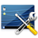

Desklets
 Desklets, auch Widgets oder Gadgets genannt, sind kleine Miniprogramme für den Desktop. Neben einfachem "Eye Candy" und Spielzeug gibt es auch eine Reihe nützlicher Desklets. Den Möglichkeiten sind fast keine Grenzen gesetzt:
Steuerung von Audioplayern
Uhren aller Art
Systemmonitore für Prozessorauslastung, Netzwerk, Festplattenbelegung usw.
Mailbox-Abfragen (auf neue Nachrichten)
News-Ticker und RSS-Nachrichten
Animierte Menübalken (Docks) etc.
Optisch besonders elegant integrieren sich Desklets bei Verwendung eines Composite-Managers in den Desktop. Insbesondere Transparenzeffekte und Schattenwurf machen einen Großteil des Charmes der Desklets aus. Zusätzlich kann man bei manchen Anwendungen eigene Skripte (z.B. mit Python) erstellen.
Während KDE ab SC 4 eigene Mechanismen (Plasma) bereitstellt, sind die meisten der im folgenden genannten Programme nicht an eine bestimmte Desktop-Umgebung gebunden. Weitere Möglichkeiten zur individuellen Desktop-Gestaltung bietet der Übersichtsartikel Desktop, insbesondere der Abschnitt Informationen auf dem Desktop.
Programme¶
Screenlets¶
Flexible Universallösung mit sehr vielen einzelnen Desklets. Über den "Screenlets Manager" können Screenlets installiert, gestartet und beendet werden. Siehe Screenlets.
gDesklets¶
Ebenfalls eine Universallösung. Der Name täuscht, neben GNOME kommen auch Xfce, LXDE und andere Fenstermanager in Frage. Die Weiterentwicklung stagniert seit 2011. Weitere Informationen im Artikel gDesklets.
Plasma Miniprogramme¶
Die Desklets der Desktop-Umgebung KDE SC 4 basieren auf Plasma und nennen sich daher auch "Plasmoide" ("Plasmoids"). Mehr im Artikel Plasma/Miniprogramme.

Conky¶
Ein einziges, hoch konfigurierbares Desklet. Wird zwar meistens als System-Monitor eingesetzt, kann aber auch z.B. einen Kalender und Wetterinformationen anzeigen. Siehe Conky und Conky Manager.
GKrellM¶
Einfacher und schlanker System-Monitor mit vielen (optionalen) Designs und Add-ons – gkrellm.
Cairo-Clock¶
Cairo-Clock ist ein kleines Programm, das eine analoge Uhr mit teilweise transparenten Effekten auf dem Desktop anzeigt.
CoverGloobus¶
CoverGloobus ist eine Anwendung, mit der das Cover des gerade gespielten Musiktitels auf dem Desktop angezeigt wird. Wahlweise kann die Minianwendung auch den AudioPlayer ansteuern. Um CoverGloobus transparent auf dem Desktop anzuzeigen, muss ein Composite-Manager aktiv sein.
Gis Weather¶
Gis Weather ist ein Desklet zur Anzeige aktueller Wetterdaten und Vorhersagen. Die Wetterdaten können entweder von Gismeteo, AccuWeather oder OpenWeatherMap bezogen werden. Mit verschiedenen Designs, Themen und Symbolen kann man das Aussehen auf vielfältige Art und Weise dem eigenen Geschmack anpassen.

Links¶
Rainlendar - Desktop-Kalender
myDesktopCalendar - ein weiterer Desktop-Kalender, der aber noch ein paar zusätzliche Möglichkeiten bietet
- Erstellt mit Inyoka
-
 2004 – 2017 ubuntuusers.de • Einige Rechte vorbehalten
2004 – 2017 ubuntuusers.de • Einige Rechte vorbehalten
Lizenz • Kontakt • Datenschutz • Impressum • Serverstatus -
Serverhousing gespendet von